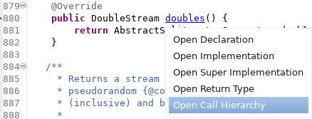
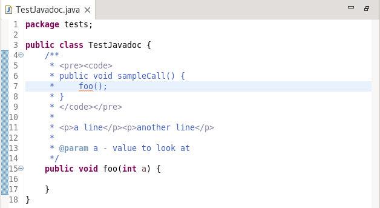
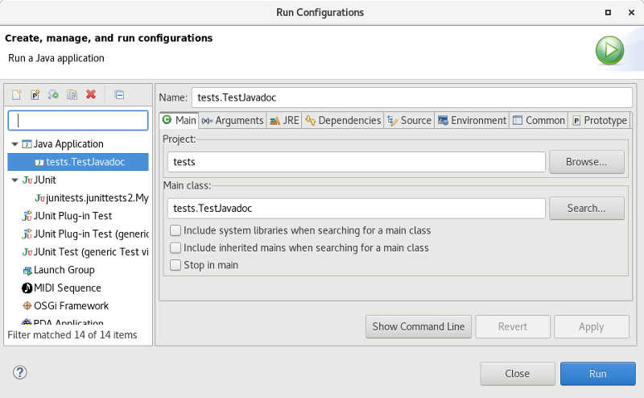

Java Editor
Open Call Hierarchy action added to the list of actions shown on Ctrl+Click for fields or methods


Java Formatter
For example, without the option, the following:

is formatted to:

and with the option specified, is formatted:

Debug
To alleviate this, a new set of preferences has been added to specify that the launch configuration name generated use the fully qualified type name. Once set, new configurations (either manually created in the Run Configurations or Debug Configurations dialogs or as a result of specifying Run as... or Debug as... from the context menu will qualify the generated name. Existing configurations are not altered.
To specify the new preferences, go to Preferences > Java > Launching

Launching a Java application results in:

JDT Developers
When detecting unused keys, it is possible for the action to generate false positives. For example, a message could be used by another plug-in or product which is not in the workspace or a message key could be dynamically created and the action cannot detect this.
A new mechanism has been added for a developer to denote that a message key is known to be used and should be ignored by the Find Broken Externalized Strings action. Simply copy any known used messages from the existing .properties file into a .usedproperties file with the same name, in the same package. The .usedproperties file follows the same syntax as a .properties file and any message keys added there will not be marked as unused by the action. The message data in the .usedproperties file is ignored and can be removed if desired.
New CompilationParticipant.postProcess() method was added that
notifies participants about finished class compilation. This notification occurs right before the compiled
class is written out to disk. This allows participants perform arbitrary byte code manipulation on generated classes.